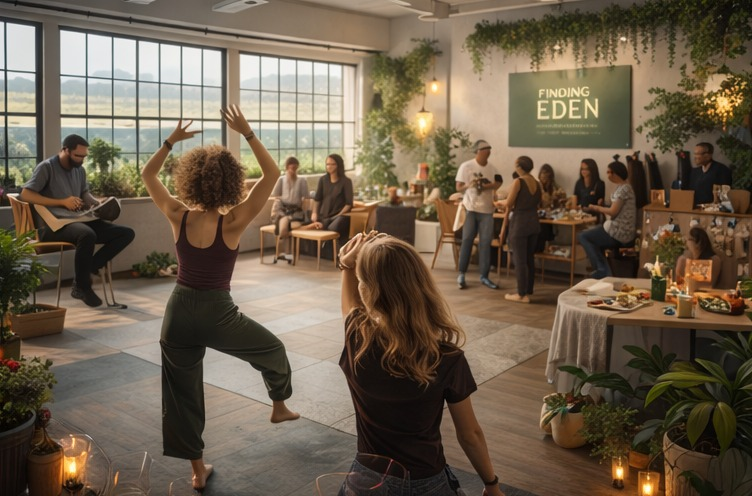

Spring launch event
Finding Eden: a community healing experience.
The launch event is designed to introduce the Finding Eden vision through a sample of each core category — movement, art, regulation, storytelling, and community connection.
A powerful first gathering.
The goal is to create an inspirational but grounded event that gives people a felt sense of what Finding Eden is trying to build. Rather than over-explaining the idea, the event lets people step into it.
- Opening circle and welcome.
- Somatic movement or grounding session.
- Art therapy / reflective creative station.
- Tea, reset, and conversation space.
- Community reflection circle or guided discussion.
- Optional music, storytelling, or anonymous reflection wall.

| Event element | Purpose |
|---|---|
| Movement / somatic opener | Help guests arrive in their bodies and feel safe enough to engage. |
| Creative healing station | Offer a non-verbal outlet for reflection and expression. |
| Community circle | Create meaningful connection and emotional honesty. |
| Resource / volunteer station | Invite people into the next step of supporting the project. |
| Photo / story documentation | Create visual proof of concept for future grants and partners. |
Want to help shape the first event?
Finding Eden is currently calling in volunteers, facilitators, and aligned collaborators for a spring pop-up launch in Los Angeles.